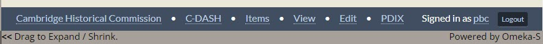
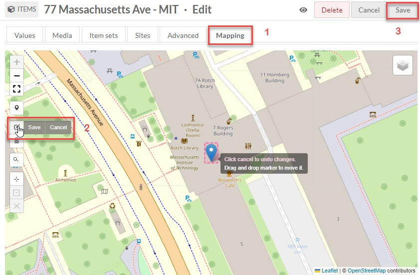

Creating and Revising CDASH Items
At this stage in the development of CDASH, almost all of the content of CDASH items has been generated by our semi-automated processing of batches of Place and Document items with associated media. This process generates CSV tables which are imported through the CSV Bulk Import Module.
As you would expect, we are encountering situations that call for fixing issues and operating on items by hand, using the standard Omeka interfaces for creating and editing items.
Practice in the Stage Instance
The Stage instance of CHCOmeka http://chcomekastage.azurewebsites.net is where we upload and preview batches of items before uploading them to production. Practice your editing techniques before attempting to carry them out on the live production instance. You can create, modify and edit items in stage, and test your results without any worry of damaging anything, since all of the items in stage can and will be wiped out with each new batch of items that are updated.
Logging in and the Admin View
To create and update items in Stage or Production you must be logged into an account with editing privileges. To access the log-in page, enter the URL for the CHCOmeka server with /admin after the ursl, e.g. http://chcomekastage.azurewebsites.net/admin
Once logged in, you wil be at the Omeka Admin interface, where you wil lhave access to all of the tools for creating Items and Item-Sets (folders). You should also notice that you can go back to view items the the CDASH theme by going back to the bare URL. When you are logged in as an administrator, you will notice that you have the admin toolbar accessible at the bottom of each item show page.

The Admin Bar is a convenient way to access the Edit functions for a particular item. You also ca use the View button to get a view of the values for item propertes such as streetSort that do not appear in the CDASH show page for items. The admin bar also happens to be the only place where ou can find the PDIX button (Place-Document Information eXchange), which we will discuss n more detail below.
Essential Item Properties
When a Place or Document Item is opened for editing, one is presented with lots of properties that are not normally seen in the user view. Most of these items are optional. The properties that will be discussed in this how-to guide will cover the minimum requirements. You can look up the ways that any property is expected to be filled out in the Data Dictionary.
Folders
Folders in CDASH are implemented through the mechanism of Omeka Item-Sets.
When editing or creating an item, you can add or remove folders by clicig the Item-Sets tab at the top of the edit page. Note that the listings for Folder among the ordinary properties of Place or Document items was created as a side-effect of the bulk upload process, and it is not necessary to edit these or to keep them in sync with the folders listed as Item-Sets.
Each CDASH Document Item should be included in just one Folder. CDASH Place items should be included in at least one Folder, but may appear in several folders.
Locations (Place Marker)
Each CDASH Item should be associated with a location. The location can be established or adjusted through the Mapping tab located on the edit page for the item.

Note that in order to save a new location for a marker, you first have to register the move by clicking Save next to the Marker tool, and then push Save at the top right corner of the Edit page.
Syncing Document Locations with the CDASH PDIX Function
Since you may have many documents associated with a place, we have created the PDIX function. Once you have successfully changed the location for a place item, you can check that it has moved by holding down the Shift key and refeshing the CDASH page. Then push the PDIX button on the CDASH Admin Bar. Refresh your page again and click a couple of Document Items to confirm that they have all been moved.Bulk Item Editing
There are cases when you may want to select a group of items (for example all of the items of type Document, that reference a particular Folder) and then do something to each of these, such as assign them to a new Named Place. It is possible to do this using the Advanced Search interface to make a selection and then you can change the values of any property for the selected set using Batch Edit